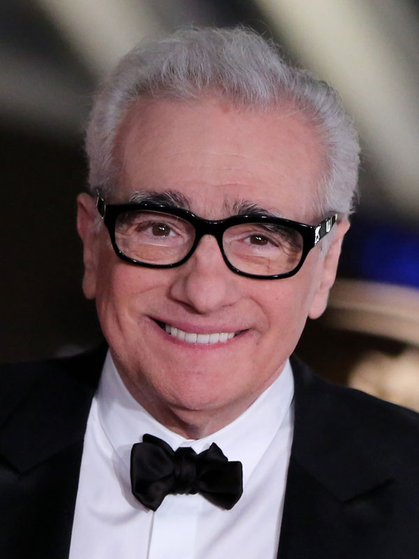
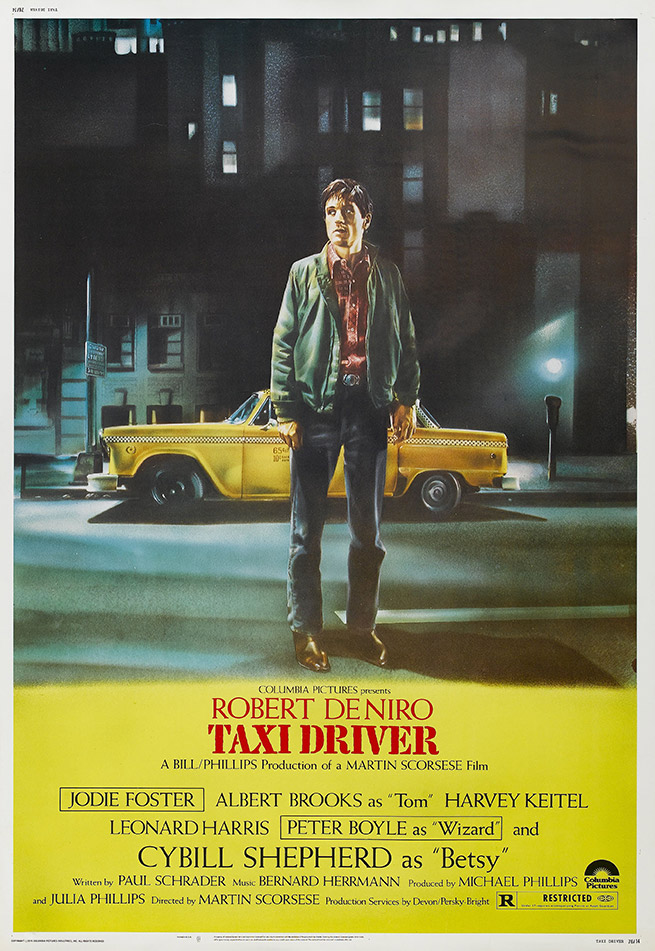
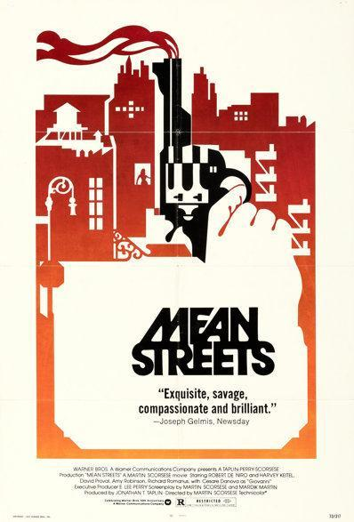
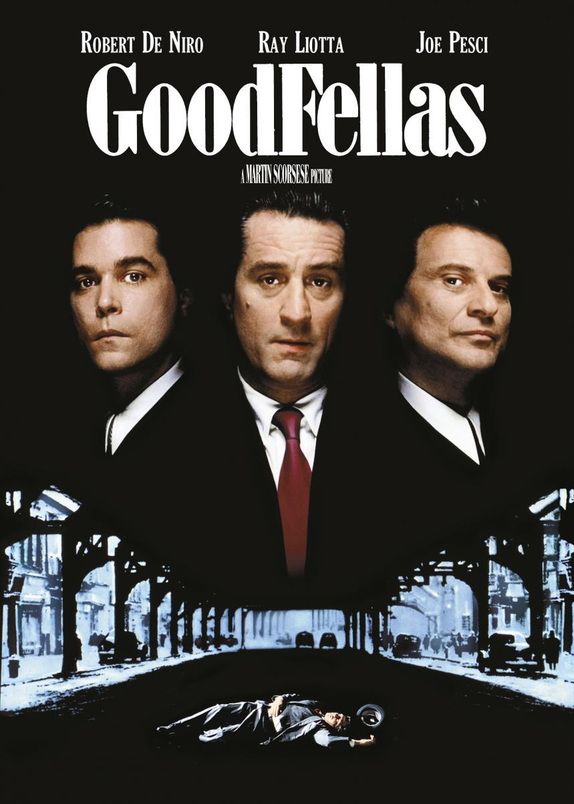
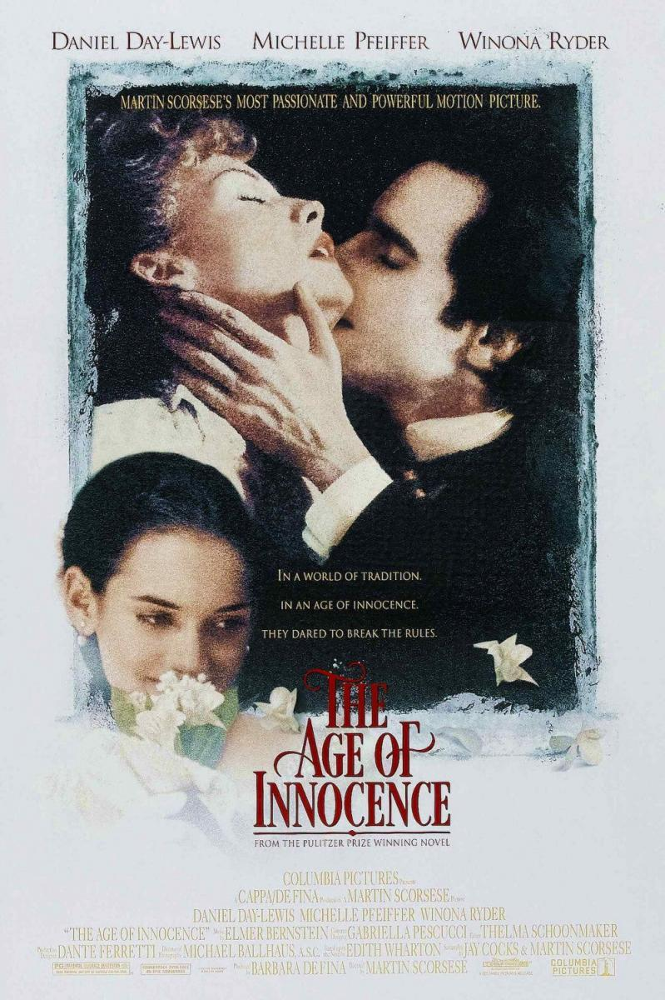

|

| Martin Charles Scorsese nació el 17 de noviembre de 1942 en Queens,
Nueva York, hijo de Catherine Scorsese (de soltera Cappa) y Charles Scorsese,
ambos trabajaban en el distrito de la confección de Manhattan y cuyas familias procedían de Palermo,
Sicilia. Se crió en el barrio de Little Italy, que más tarde sirvió de inspiración para varias de sus películas.
Scorsese obtuvo un B.S. Licenciado en comunicaciones cinematográficas en 1964,
seguido de una maestría en el mismo campo en 1966 en la Escuela de Cine de la Universidad de Nueva York.
Durante este tiempo, ha realizado numerosos cortometrajes premiados, entre ellos The Big Shave (1967),
y dirigido su primer largometraje, ¿Quién llama a mi puerta? (1967).
|

TAXI DRIVER
Un veterano con problemas de salud mental trabaja como taxista en Nueva York,
donde su percepción de la decadencia a su alrededor alimenta su deseo de violencia.
Aquí encontrarás un trailer de la película
|

Un matón de poca monta aspira a subir de rango en la mafia local.
Aquí encontrarás un trailer de la película
|

Uno de los Nuestros
La historia de Henry Hill y su vida en la mafia, abarcando su relación con su esposa Karen Hill y
sus socios mafiosos Jimmy Conway y Tommy DeVito en el sindicato del crimen italoamericano.
Aquí encontrarás un trailer de la película
|

La Edad de la Inocencia
Una historia de la alta sociedad neoyorquina del siglo XIX,
en la que un joven abogado se enamora de una mujer separada de su marido,
mientras él está comprometido con la prima de ella. Aquí encontrarás un trailer de la película
|